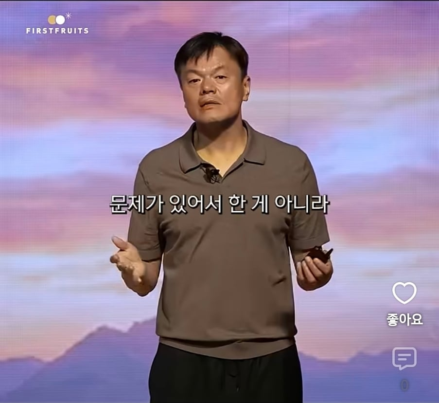
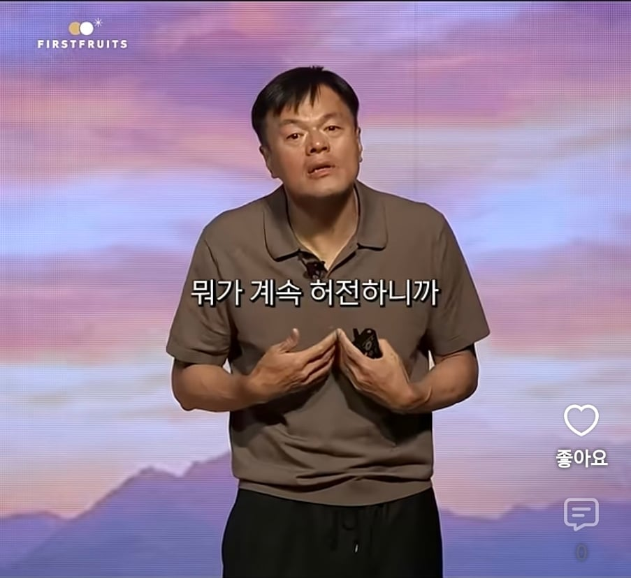
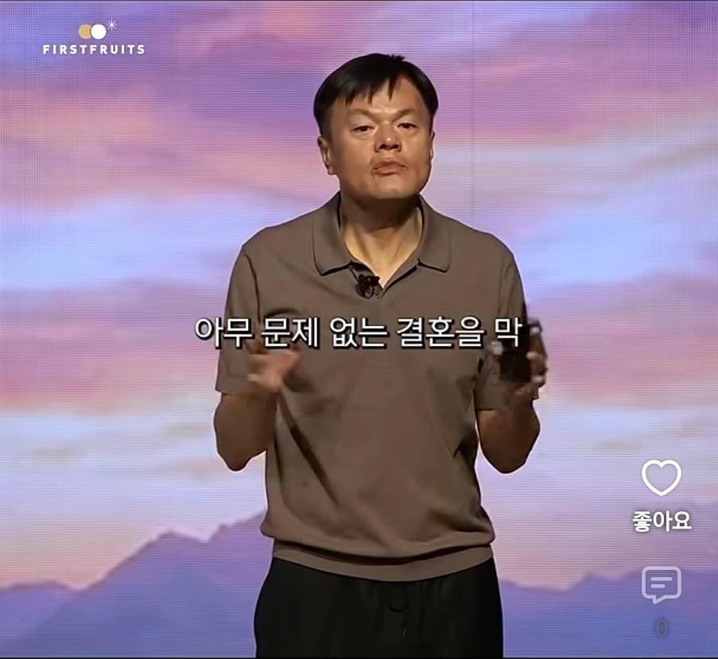
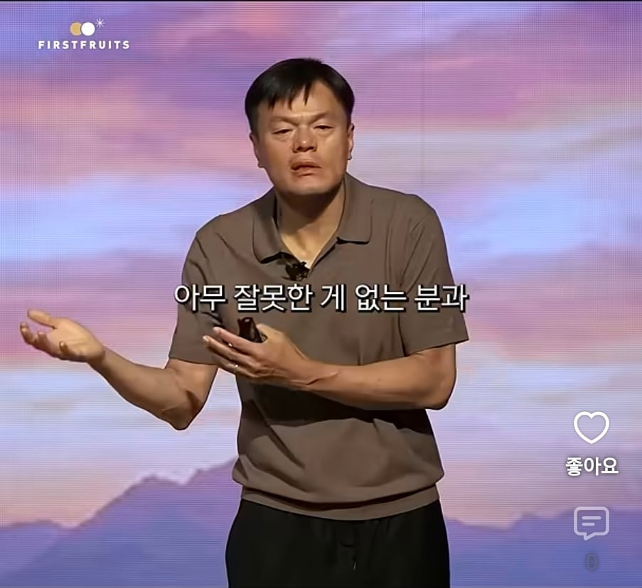
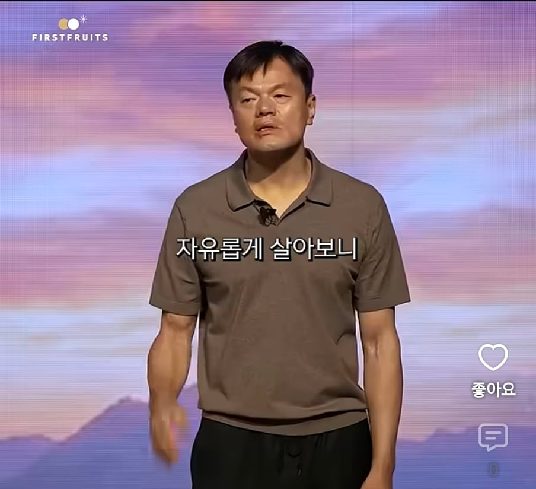

그래서 다시 재혼함





그래서 다시 재혼함
이건진짜개소린데...
진짜 저러고 이혼하면 병신인데
헐... 박진영 이혼 찾아봤더니
"위자료 30억 원과 매달 생활비 2,000만 원을 지급하는 조건으로 조정이 이루어져 당시 큰 화제가 되었습니다"
ㄷㄷ
진짜...노래도 좋아했고
연습생들에게 해주는 말에 위로도 받고 그랬는데
야......
행복하지 않아서 이혼했고 같은 이유로 재혼했다 하는데
그냥 지멋대로 살고 싶었고 조카뻘되는 어린애랑 하고 싶었던거 뿐인 인간임
박재범 사건도 있었던거 보면 방송에서 꾸민거지 멀쩡한 인간은 아님
ㅋㅋㅋㅋㅋㅋㅋ멋있놐ㅋㅋㅋㅋ
마지막짤에 "그 허전함을 신앙이 채워줬습니다." 라고 하면 댓글이 더 활활 타고 ㅋㅋ
애가 없어서 저럼
좋게 말하면 자유로운 사람이고 나쁘게 말하면 극도로 이기적인 사람임